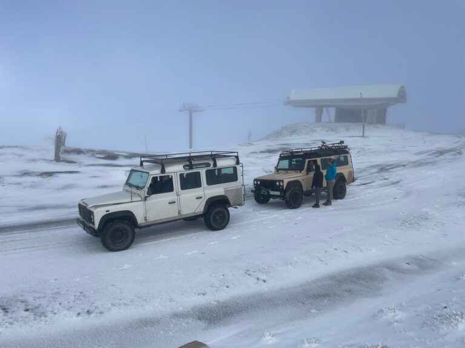
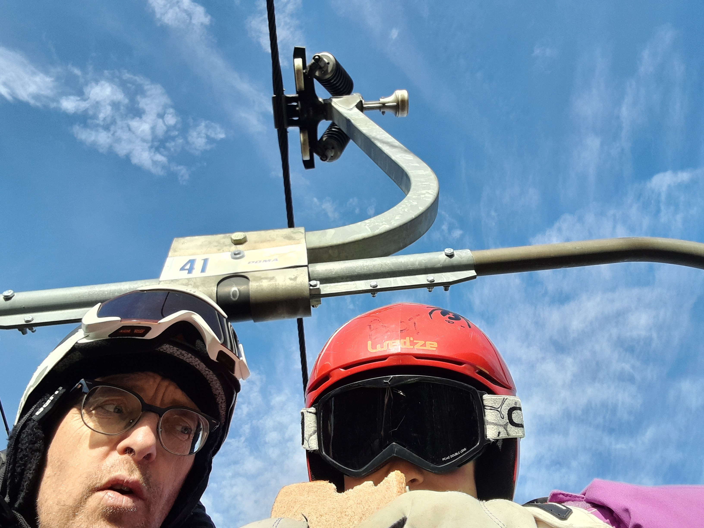
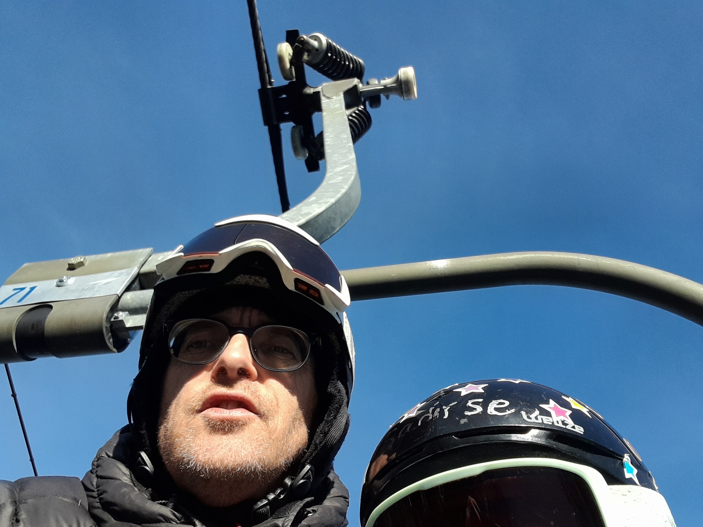
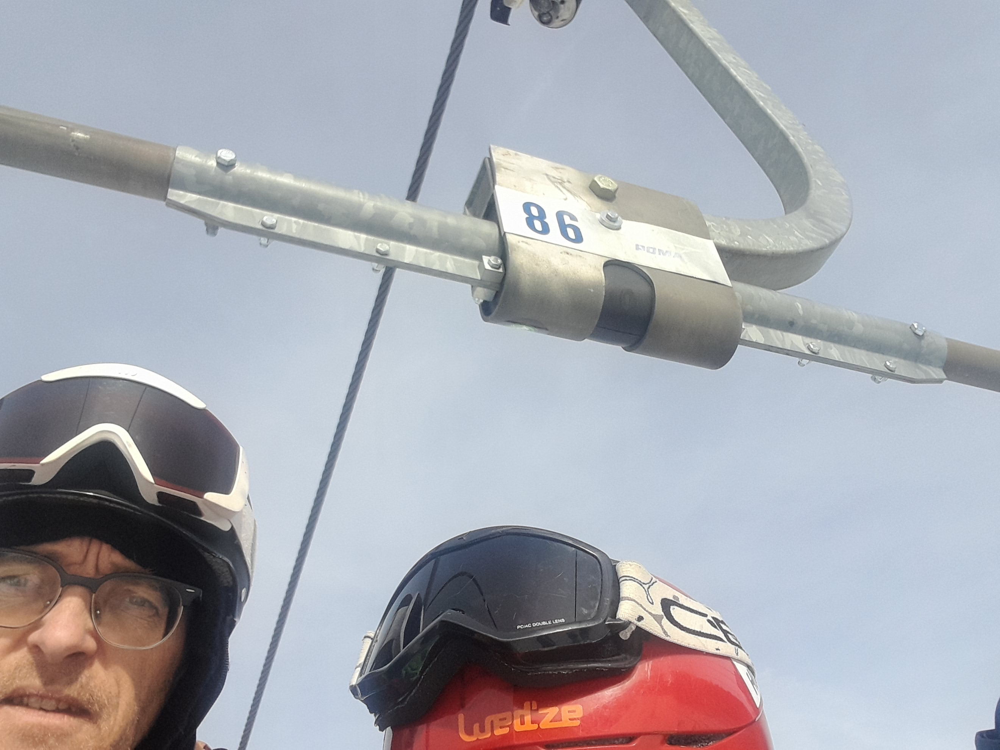
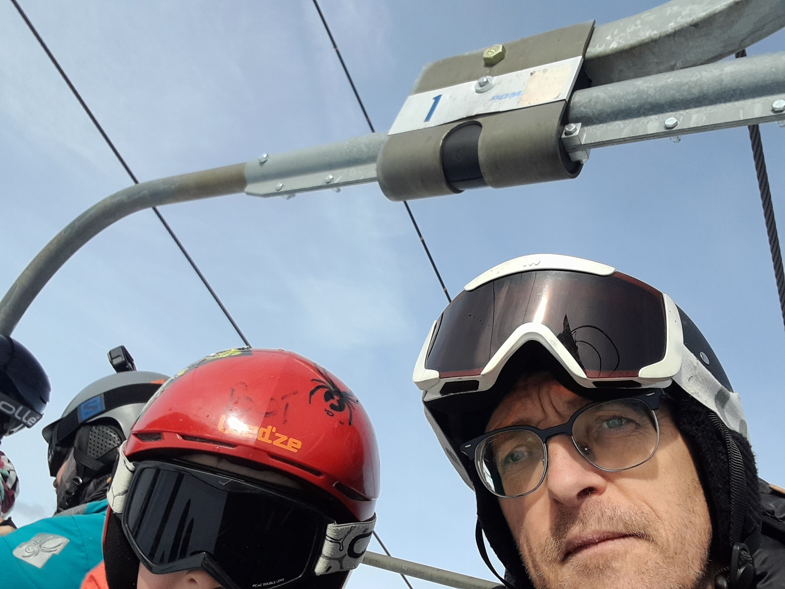
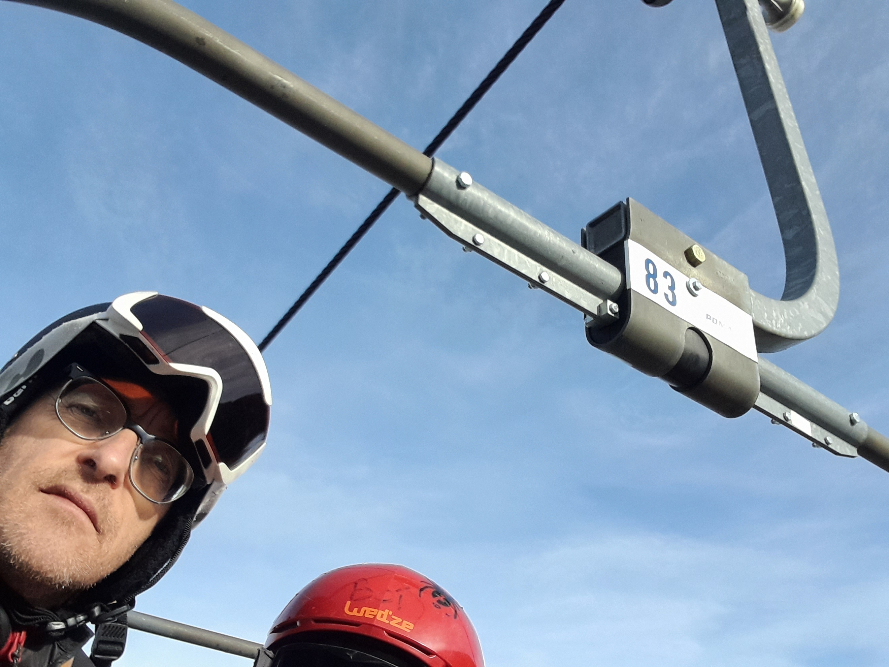

## Jetcim

A photo for every chair on the Jetcim skilift.

Port Aine is our local ski station, located about thirty minutes from our house, so we go up there most weekends in the season. The main chairlift, called Jetcim, takes you from the hotel at the bottom (at 2,000 metres altitude) up to Pic de l'Orri (the tippy top) which is at 2,440 metres. Jetcim has 122 chairlift seats, each seating six people. I'm adding to this page every time I take a lift I haven't been on yet, beginning in the 2023-2024 season. I don't know how long it will take.
Sometimes we drive up to the top (the Santana in the foreground), but Jetcim (in the background) is the more traditional transport.



### 2023-12-14 | #104 | 6/122

Solo, but not for long.


### 2023-12-10 | #41 | 5/122

Boí eating his sandwich.



### 2023-12-10 | #71 | 4/122

Going up with Saoirse to do Rabasta, her favourite run. She's four and is already a speed demon.



### 2023-12-09 | #86 | 3/122

Boí slightly disappearing again.



### 2023-12-09 | #1 | 2/122

We're number one! With Boí slightly more visible, we caught the #1 chairlift on the first day. 



### 2023-12-09 | #83 | 1/122

The first one! Yay! With Boí on chairlift 83, a bright and sunny day. You can only see the top of Boí's helmet. Hopefully, I'll get better at selfies on a chairlift and not drop the phone in the process.


